BPMN는 무엇인가?
소프트웨어 프로젝트 문서를 작성하면서 사용자가 어떻게 사용하며, 시스템이 어떻게 작동하는지 그림으로 표현을 해야 할 때,
사용자에서 어느 시점에서 무엇을 해야하고, 시스템에서 어떤 입력을 받아 어떻게 실행 하는지 그림으로 그리기 위해서 Flow Chart(1921년부터 사용, 1985년 ISO 표준 제정)와 UML을 많이 사용했습니다.
그러나 Flow Chart와 UML은 표현방식과 내용에 한계가 있어 2005년에 UML의 복잡성을 과감하게 단순화(Simplify)시킨 새로운 표준으로 BPMN이 나왔습니다.
이벤트 (Event)
BPMN에서 이벤트(Event)는 비즈니스 프로세스 전반에 걸쳐 발생하는 것입니다. 항상 원으로 표시되며 해당 원 안에 아이콘을 포함하여 이벤트를 보다 자세히 설명할 수 있습니다. 다이어그램에는 항상 시작 및 종료 이벤트 기호도 포함되어야 합니다.
Start Event :
 |
None
(시작 이벤트 기호) |
프로세스의 첫 단계, 일반적인 시작 이벤트(non start event)를 표현합니다.
이 표현은 시작 이벤트가 어떻게 발생하는지를 명시하지 않습니다. 만약 시작 이벤트가 어떻게 발생하는지를 명시하고자 할 때 내부 심볼을 사용합니다. |
|
Message
(메세지 기호) |
프로세스를 트리거하고, 중간 프로세스를 촉진하거나 프로세스를 완료합니다.
메시지 플로우로 연결하여 어느 프로세스에서 메시지를 보냈는지 표시할 수 있습니다. |
| 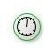 |
Timer
(타이머 기호) |
시간, 날짜나 반복적인 시간 및 날짜가 프로세스를 트리거하고, 중간 프로세스를 보조하거나 프로세스를 완료합니다. |
|
Conditional
(조건부 기호) |
비즈니스 조건이나 비즈니스 규칙이 충족되면 프로세스가 시작되거나 지속됩니다.
이벤트에 대한 조건식은 반드시 이벤트가 다시 트리거되기 전에 FALSE가 되어야합니다.
"조건부 시작 이벤트"의 "조건식"은 프로세스 인스턴스가 아직 작성되지 않았기 때문에 프로세스의 데이터 컨텍스트 또는 인스턴스 속성을 참조해서는 안됩니다. 대신 환경의 정적 프로세스 속성 및 엔티티 상태를 참조 할 수 있습니다. |
| 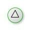 |
Signal
(신호 기호) |
여러 프로세스 간 통신하는 신호입니다. 신호 기호는 프로세스를 시작하거나, 진행하거나 완료할 수 있습니다.
다른 프로세스에서 브로드 캐스트 된 신호가 도착하여 프로세스 시작을 트리거합니다.
신호는 수신자를 지정한 메시지가 아니며, 같은 시그널 신호 트리거를 가진 여러 프로세스가 동시에 실행될 수 있습니다. |
| 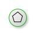 |
Multiple
(복수 기호) |
프로세스를 시작하는 복수의 트리거입니다.
해당 프로세스를 시작시키는 여러가지 방법이 있다는 것을 의미하고 그것들 중 하나라도 오면 시작합니다. |
 |
Parallel Multiple
(병렬 복수 기호) |
가능한 모든 이벤트가 발생할 때까지 시작되거나, 지속되거나 종료되지 않는 프로세스 인스턴스입니다.
해당 프로세스를 시작시키는 여러가지 방법이 있다는 것을 의미하고 그것들 중 하나라도 오면 시작합니다. |
End Event :
 |
None
(종료 이벤트 기호) |
프로세스의 마지막 단계, 일반적인 종료 이벤트(non end event)를 표현합니다.
이 표현은 종료 이벤트가 어떠한 결과를 발생하는지를 명시하지 않습니다. 만약 종료 이벤트가 어떠한 결과를 발생하는지를 명시하고자 할 때 내부 심볼을 사용합니다. |
|
Message
(메세지 기호) |
프로세스의 결과를 참여자에게 메시지로 보냅니다.
메시지를 수신하는 참여자는 메시지 플로우를 연결함으로써 식별할 수 있습니다. |
 |
Error
(오류 기호) |
프로세스 시작, 중간 또는 끝에서 발견된 오류입니다. 오류 트리거가 있는 이벤트 하위 프로세스는 항상 포함된 프로세스를 중단시킵니다.
활성화된 모든 서브 프로세스가 종료되며, 에러는 같은 에러코드를 가지거나 가장 근접한 부모 엑티비티에 존재하는 Catch Error Intermediate Event에 의해서 잡을 수 있습니다.
계층구조를 가지고 있는 엑티비티에서 Error Intermediate Event가 없으면 프로세스의 동작이 불명확해지며, 이 경우에는 실행되고 있는 프로세스의 시스템은 추가적으로 에러 처리방법을 정의할 수 있고 일반적으로 프로세스를 종료시킬 수 있습니다. |
 |
Escalation
(단계적 확대 기호) |
한 단계가 에스컬레이션에 반응하여 조직의 다른 역할로 흘러갑니다. 이 이벤트는 이벤트 하위 프로세스 내에서만 사용됩니다. 에스컬레이션은 조직 내에서 더 높은 책임 수준에 있는 사람이 프로세스에 연관되는 경우 발생합니다.
다른 활성 스레드는 이것의 영향을받지 않으며 계속 실행됩니다.
같은 에스컬레이션 코드를 가지거나 가장 가까운 부모 엑티비티의 Catch Escalation Intermediate Event가 잡습니다.
만약 계층적인 엑티비티에서 Escalation Intermediate Event가 없으면 프로세스 동작이 불명확해집니다. |
| 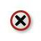 |
Cancel
(취소 기호) |
하위 프로세스 내에서 취소된 트랜잭션에 반응합니다. 종료 이벤트에서 취소 기호는 트리거된 프로세스 취소를 나타냅니다.
트랜잭션 서브 프로세스에서 사용합니다.
트랜잭션이 취소되고 서브 프로세스 경계에 있는 Cancel Intermediate Event가 트리거 될 것임을 표시합니다.
TransactionProtocol Cancel Message가 트랜잭션에 관여된 모든 엔티티에게 전송됨을 의미합니다. |
|
Compensation
(보상 기호) |
운영이 부분적으로 실패한 경우 트리거되는 환불입니다. Compensation이 필수임을 표시합니다.
활동이 식별되고 성공적으로 완료되면 해당 활동이 보상됩니다.
보상 종료 이벤트에서 활동을 볼 수 있어야 합니다.
즉, Compensation End Event가 일반적인 흐름 안에 있고 서브프로세스와 동일한 레벨에 있어야 합니다. |
| 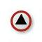 |
Signal
(신호 기호) |
End에 도달하면 신호가 브로드 캐스트됨을 나타냅니다.
신호를 수신 할 수있는 모든 프로세스로 브로드 캐스트되는 신호는 프로세스 레벨 또는 풀을 통해 전송 될 수 있지만 메시지는 아닙니다. |
 |
Multiple
(복수 기호) |
프로세스를 종료하면 여러 가지 결과가 있음을 의미합니다. |
| 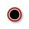 |
Terminate
(종료 기호) |
프로세스 단계의 즉각적인 종료를 트리거합니다. 동시에 모든 관련 인스턴스도 종료됩니다.
프로세스의 모든 활동이 즉시 종료되어야 함을 나타냅니다. 여기에는 모든 인스턴스가 포함됩니다. 보상 또는 이벤트 처리없이 프로세스가 종료됩니다. |
Intermedidate Event :
|
None
(중간 이벤트 기호) |
시작 이벤트와 종료 이벤트 사이에 발생하는 모든 이벤트를 나타냅니다.
일반적인 흐름위에서만 의미가 있습니다. (Activity의 경계에 놓을 수 없음)
이벤트가 발생하는 특정한 트리거가 없으며, 프로세스에서 상태 변경을 나타내기 위해 이벤트를 사용하는 모델링 방법론에 사용합니다. |
|
Message
(Throw 메세지 기호) |
메시지는 보내거나 받는데 사용합니다.
받는 메시지 이벤트는 메시지를 기다리는 중 일때 프로세스를 계속하게 하거나 예외 처리를 위한 플로우로 변경합니다.
메시지를 수신한 참여자는 메시지 플로우로 식별합니다. |
|
Message
(Catch 메세지 기호) |
|
Timer
(Catch 타이머 기호) |
일반 플로우에서는 지정한 시간이나 특정 사이클에 맞게 지연을 시킵니다. |
|
Escalation
(Throw 단계적 확대 기호) |
Escalation 을 발생시킵니다. |
|
Compensation
(Throw 보상 기호) |
Compensation이 필수임을 표시합니다.
활동이 식별되고 성공적으로 완료되면 해당 활동이 보상됩니다.
보상 종료 이벤트에서 활동을 볼 수 있어야 합니다. 즉, Compensation End Event가 일반적인 흐름 안에 있고 서브 프로세스와 동일한 레벨에 있어야 합니다. |
|
Conditional
(조건부 기호) |
조건이 TRUE가되면 트리거됩니다. 조건은 식 유형입니다. |
| 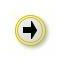 |
Link
(Throw 링크 기호) |
일반적인 흐름에서만 사용가능, 즉 활동의 경계에 사용될 수 없습니다.
링크는 프로세스의 두 섹션을 연결하는 메커니즘이며, 연결 이벤트를 사용하여 루핑 상황을 만들거나 긴 시퀀스 흐름 라인을 피할 수 있습니다.
링크 이벤트 사용은 단일 프로세스 수준으로 제한됩니다. (즉, 상위 프로세스와 하위 프로세스를 연결할 수 없음).
짝을 이루는 중간 이벤트는 여러 페이지에 걸쳐 프로세스를 인쇄하기 위해 "오프 페이지 커넥터"로 사용될 수도 있으며, 또한 프로세스 수준 내에서 일반 "이동"개체로 사용할 수도 있습니다.
소스 링크 이벤트는 여러개 있을 수 있지만 대상 링크 이벤트는 하나만 있을 수 있습니다. |
| 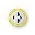 |
Link
(Catch 링크 기호) |
| 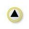 |
Signal
(Throw 신호 기호) |
신호를 보내거나받는 데 사용합니다.
신호는 프로세스 수준 내, 프로세스 수준, 풀 및 비즈니스 프로세스 다이어그램 간의 일반적인 통신을 위함입니다.
BPMN 신호는 관심을 보인 후 반응을 원하는 사람을 위해 허공으로 발사되는 신호 플레어와 유사합니다. 따라서 신호 원이 있지만 특정 목표는 없습니다.
이 유형의 중간 이벤트는 이벤트가 정상 흐름의 일부인 경우 신호를 보내거나 받을 수 있습니다.
이벤트는 활동의 경계에 연결된 경우에만 신호를 수신 할 수 있고 에러 이벤트보다 더 일반적이고 엑티비티를 인터럽트 할 수 있는 에러 조건이 없고 에러 이벤트보다 더 큰 영역을 가집니다. |
| 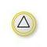 |
Signal
(Catch 신호 기호) |
|
Multiple
(Throw 복수 기호) |
다수의 트리거들이 이 이벤트에 할당되어 있다는 의미입니다.
일반 플로우에서는 트래거를 잡거나 보낼수 있고, 엑티비티 경계에 있으면 트리거를 잡을 수만 있습니다. 트리거를 잡기 위해 사용할 떄는 한개 트리거만 할당할 수 있습니다.
트리거를 던지기 위해 쓸때는 할당된 트리거중에 하나만 트리거 되도 이벤트를 발생시킵니다.
|
| 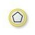 |
Multiple
(Catch 복수 기호) |
| 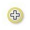 |
Parallel Multiple
(Catch 병렬 복수 기호) |
다수의 트리거가 이벤트에 할당되어 있습니다. 일반 플로우나 엑티비티 경계있을 때 트리거를 잡을 수 있습니다. 할당된 모든 트리거가 도달해야 이벤트가 발생됩니다. |
활동 (Activities)
Task는 프로세스 흐름 상에서 더 이상 상세 레벨로 내려갈 수 없는 가장 작은 단위입니다. 일반적으로 사람이나 애플리케이션이 실제로 행동하는 것을 표현하는 단위이기도 합니다.
Taks의 Type :
|
None |
활동의 가장 기본적인 수준으로서, 이보다 더 세분화할 수는 없습니다. |
|
Transaction |
결제와 관련된 특수 하위 프로세스입니다. |
| 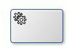 |
Service |
서비스에 일종이고 웹 서비스나 자동화된 애플리케이션일 수 있습니다. |
|
Send |
Message를 외부 참여자에게 보내기 위한 Task입니다. 메시지를 전송하면 해당 Task는 종료됩니다. |
|
Receive |
외부 참여자가 보내는 Message를 수신하기 위해 기다리는 Task입니다. 메시지를 수신하면 Task는 종료됩니다. |
| 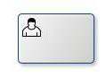 |
User |
사람이 소프트웨어 애플리케이션을 통해 수행하는 일반적인 작업을 표현하기 위한 Task입니다. |
| 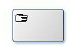 |
Manual |
소프트웨어 애플리케이션을 사용하지 않고 사람이 직접 수행하는 Task입니다. 설비 설치 등을 예를 들 수 있습니다. |
| 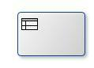 |
Business Rule |
비스니스 규칙 엔진에 입력값을 넣고, 결과를 얻는 Task입니다. |
| 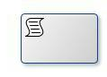 |
Script |
비즈니스 프로세스 엔진에 의해서 실행되는 Task입니다. 모델러나 개발자가 스크립트를 작성하여 넣으면 엔진에 의해서 스크립트가 실행되며, 스크립트가 다 실행되면 Task는 종료됩니다. |
Taks의 Maker :
Task는 Loop, Multi-Instance, Compensation 3가지 타입 마커를 넣어서 더 상세하게 표현 할 수 있습니다.
| 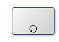 |
Loop |
|
| 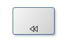 |
Multi-Instance |
|
| 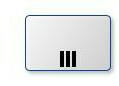 |
Compensation |
|
게이트웨이 (Gateways)
게이트웨이는 시퀀스 흐름이 프로세스 내에서 모이고 흩어지는 방식을 제어하는데 사용합니다. 모든 비즈니스 프로세스 흐름을 정의하는데 결정, 분기, 모이기, 복사, 연결 등에 사용할 수 있습니다.
Gateway Type :
|
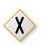
|
Exclusive
(제외 기호) |
비즈니스 프로세스의 상태를 평가하고, 조건에 기반하여 흐름을 하나 이상의 상호 배타적인 경로로 구분합니다. 예를 들어, 상급자가 승인하면 보고서 하나가 작성되며, 상급자가 승인하지 않으면 보고서가 생성되지 않습니다. |
|
Inclusive
(포함 기호) |
프로세스 흐름을 하나 이상의 흐름으로 나눕니다.
예를 들어, 포함 게이트웨이는 설문조사 결과에 기반하여 취하는 비즈니스 행동을 포함할 수 있습니다.
소비자가 제품 A에 만족하는 경우 한 가지 프로세스가 트리거될 수 있습니다.
소비자가 제품 B에 만족감을 표시하면 또 다른 흐름이 트리거되며, 소비자가 제품 A에 만족하지 않으면 세 번째 프로세스가 트리거됩니다. |
| 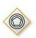 |
Event-Based
(이벤트 기반 기호) |
이벤트 기반 게이트웨이는 제외 게이트웨이와 비슷합니다. 두 게이트웨이 모두 흐름의 경로 하나와 관련됩니다.
단, 이벤트 기반 게이트웨이의 경우 어떤 조건이 충족되었는지가 아닌 어떤 이벤트가 발생했는지를 평가합니다.
예를 들면, CEO가 사무실에 도착할 때까지 기다렸다가 이메일을 전송해야 하는 경우를 예로 들 수 있습니다.
CEO가 도착하지 않으면 이메일은 전송되지 않은 상태로 남습니다. |
| 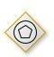 |
Event-Based
(제외 이벤트 기반 기호) |
후속 이벤트가 발생할 때마다 새 프로세스 인스턴스를 시작합니다. |
| 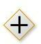 |
Parallel
(병렬 기호) |
조건이나 이벤트에 종속되지 않는다는 점에서 다른 게이트웨이와 다릅니다.
병렬 게이트웨이는 비즈니스 흐름에서 동시에 발생하는 작업 두 개를 나타나는 데 사용됩니다.
새로운 영업 리드를 생성하는 동시에 기존의 리드에 연락하는 마케팅 부서가 이러한 예에 해당합니다. |
|
Complex
(복합 기호) |
이 게이트웨이는 비즈니스 프로세스의 가장 복잡한 흐름에만 사용됩니다.
복합 게이트웨이의 이상적인 사용 사례는 비즈니스 흐름을 설명하는 데 복수의 게이트웨이가 필요한 경우입니다. |
| 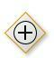 |
(병렬 이벤트 기반 기호) |
이 게이트웨이는 이름처럼 병렬 게이트웨이와 유사하며, 복수의 프로세스가 동시에 발생할 수 있도록 허용하나 병렬 게이트웨이와는 달리 프로세스가 이벤트 종속적입니다. |
Exclusive Gateway :
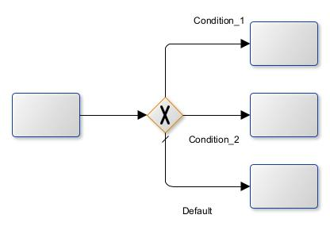
게이트웨이의 조건에 해당하는 한 곳의 토큰을 보냅니다.
Inclusive Gateway :
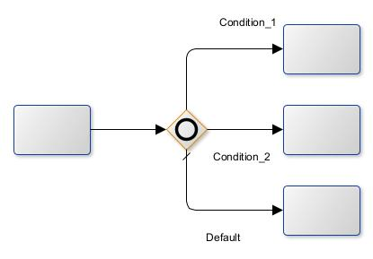
모든 흐름이 평가되고 참인 곳으로 모두 토큰을 보냅니다. 병렬로 흩어진 흐름을 모으는데도 사용됩니다. 토큰이 게이트웨이에 도착하면 다른 흐름에서 오는 토큰을 기다릴 수 있습니다.
Parallel Gateway :
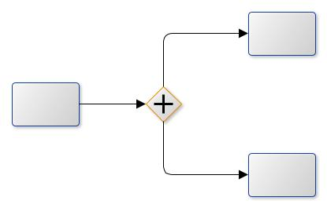
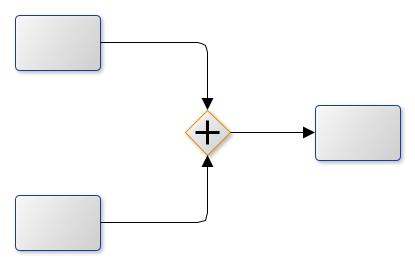
흐름에 대한 평가를 하지 않고 모든 흐름으로 토큰을 보냅니다.
Complex Gateway :
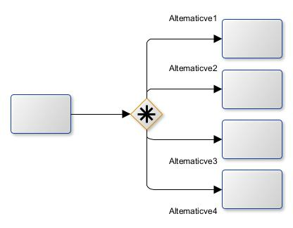
복잡한 게이트웨이는 복잡한 동기화 동작을 모델링하는 데 사용할 수 있습니다. Expression activationCondition은 정확한 동작을 설명하는 데 사용됩니다.
예를 들어,이 표현식은 게이트웨이를 활성화하기 위해 5 개의 수신 시퀀스 흐름 중 3 개의 토큰이 필요하도록 지정할 수 있습니다.
게이트웨이에서 생성되는 토큰은 포함 게이트웨이의 분할 동작에서와 같이 나가는 시퀀스 흐름의 조건에 따라 결정됩니다.
토큰이 나머지 두 시퀀스 흐름에 나중에 도착하면 해당 토큰으로 인해 게이트웨이가 재설정되고 나가는 시퀀스 흐름에서 새 토큰이 생성 될 수 있습니다.
재설정하기 전에 추가 토큰을 기다려야하는지 여부를 판별하기 위해 게이트웨이는 포함 게이트웨이의 동기화 의미를 사용합니다.
복잡한 게이트웨이는 다른 게이트웨이와 달리 내부 상태가 있으며, 이는 부울 인스턴스 속성 waitingForStart로 표시되며, 이는 초기에 true이고 활성화 후 false가됩니다.
이 속성은 나가는 시퀀스 흐름의 조건에서 사용되어 활성화시 토큰이 생성되는 위치와 재설정시 토큰이 생성되는 위치를 지정할 수 있습니다.
나가는 각 시퀀스 흐름은 활성화 또는 재설정시 토큰을 얻지 만 둘 다받는 것이 좋습니다.
적어도 하나의 나가는 시퀀스 흐름은 활성화시 토큰을 받아야하지만 토큰은 재설정시 생성되지 않아야합니다.
Event-Based Gateway :
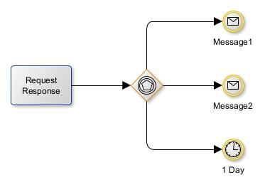
게이트웨이에 달린 이벤트 들 중에 먼저 온 곳으로 토큰을 보냅니다.
데이터 객체 (Data Objects)
데이터 객체(Data Object)는 프로세스 흐름에서 처리되는 데이터 구조와 정보를 표현하며, 다음과 같은 5가지 데이터 모델 요소를 사용할 수 있습니다.
Data Object :
- 데이터 객체(Data Object)
- 입력 데이터(Data Input)
- 출력 데이터(Data Output)
- 데이터 수집(Data Collection)
- 데이터 저장소(Data Store)
Data Object Type :
|
Data Object
(데이터 객체 기호) |
프로세스 흐름 안에서 처리되는 일반적인 데이터 항목을 표시합니다. 프로세스 흐름을 실행하는 동안 변경되는 데이터 객체의 상태는 ([])안에 표기합니다. |
| 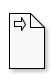 |
Data Input
(데이터 입력 기호) |
비즈니스 프로세스의 작업이 종속된 데이터 요구 사항을 나타냅니다. |
| 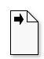 |
Data Output
(데이터 출력 기호) |
비즈니스 프로세스의 결과로 생산된 정보를 나타냅니다. |
| 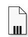 |
Data Collection
(데이터 수집 기호) |
비즈니스 프로세스 내에서 수집된 정보를 나타냅니다. |
Data Store :
| 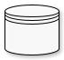 |
Data Store
(데이터 저장소 기호) |
비즈니스 프로세스와 관련된 데이터를 저장하거나 액세스할 수 있는 능력을 나타냅니다. |
흐름 (Flow)
Flow :
| 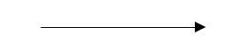 |
Sequence Flow |
프로세스의 흐름을 나타냅니다. Activity를 비롯한 Element들을 이어줍니다. 하지만 나중에 나올 Swimlane을 벗어나지 못한다는 제약사항이 있다. 실선에 색칠된 삼각형으로 표기합니다.
분기처리된 프로세스의 기본 흐름을 표시하기 위해서는 선 끝에 \ 를 그어 표기합니다. |
| 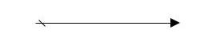 |
Default Flow |
| 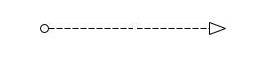 |
Message Flow |
Swimlane간에 전달하는 메시지를 의미합니다. 메시지라함은 말(Speak), 시스템 등록같은 다른 사람이나 시스템에 지시와 요청을 전달하는 것을 포괄적으로 나타냅니다. 점선에 빈 삼각형 화살표로 표기합니다. |
| 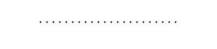 |
Association |
액티비티와 관련된 산출물을 연결할때 사용합니다. 산출물은 말(Speak), 제품, 데이터등 포괄적인 의미를 갖고 있습니다. 작은 점선으로 표기합니다. |
| 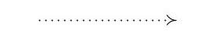 |
Directed Association |
아티팩트 (Artifact)
아티팩트(Artifact)는 프로세스 실행에 영향을 미치지 않고 프로세스 다이어그램에만 표현하는 구문적인 정보를 말합니다. BPMN에서는 다음과 같은 2가지 아티팩트를 가집니다.
아티팩트(Artifact) 종류 :
그룹(Group) :
| 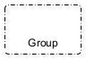 |
Group Object
(그룹 기호) |
일련의 모델 요소의 그룹에 어떤 특별한 의미를 부여하기 위해 사용되는 시각적인 표현입니다. 그룹은 모서리가 둥근 사각형 점선으로 표현됩니다. |
주석(Annotation) :
|
Annotation Object
(주석 기호) |
주석은 텍스트로 표현된 설명입니다. 주석은 모델 요소에 부착되며, 이때 주석과 모델 요소를 연결하는 커넥터를 연관(association:점선)으로 표현합니다. |
스윔레인 (Swimlane)
BPMN으로 그린 맵 캔버스는 레인과 풀로 구성됩니다.
스윔레인은 BPMN 다이어그램의 프로세스의 측면을 정리하는 데 사용됩니다.
스윔레인은 개체를 레인으로 시각적으로 그룹화하며, 프로세스의 각 측면을 별도의 레인에 추가합니다.
이러한 요소는 가로 또는 세로로 정렬할 수 있습니다.
스윔레인은 활동을 개별 카테고리로 정리할 뿐 아니라, 지연, 비효율 및 프로세스의 각 단계를 담당하는 작업자도 나타낼 수 있습니다.
Swimlane :
Pool, Swimlane, Column, Blackbox Pool
{kind=link}